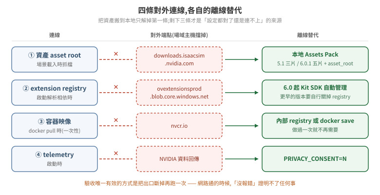

25 · 官方資產的預先下載與離線佈署:讓場域主機不必對外
一個引用了官方資產的場景,在執行期會去 asset root 抓檔。這件事在開發機上看不出來——網路是通的,慢一點而已;搬到場域主機才會暴露:防火牆擋掉出口之後,場景載到一半停住,或是 get_assets_root_path() 回 None,而錯誤訊息不會告訴你缺的是網路。
把資產搬到本地不難,難的是資產只是對外連線裡的一條。把資產包放好、發現還是連不上,通常是撞到另外三條。這篇先把四條列清楚,再逐條給離線替代方案。

驗證狀態:本篇每一條都標出處,來源是 NVIDIA 官方文件(Isaac Sim 5.1.0 / 6.0.1)與一則公開論壇回報。本 repo 尚未在實際 air-gapped 環境驗證整套流程;凡是「官方文件這樣寫」與「我們實測過」的區別,文中逐條標明。§6 給的是自己驗證的方法。
1. 四條對外連線
| # | 連線 | 什麼時候發生 | 離線替代 |
|---|---|---|---|
| 1 | 資產 asset root | 場景載入、get_assets_root_path() 被呼叫時 |
下載 Local Assets Pack,設 asset root 指到本地(§2–§4) |
| 2 | Kit extension registry | 啟動解析 extension 相依時 | 6.0 起由 Kit SDK 自動管理;更早的版本要關 registry(§5) |
| 3 | 容器映像 nvcr.io |
docker pull 時 |
一次性:在有網路的機器 pull 後 docker save / 推進內部 registry |
| 4 | telemetry | 啟動時 | 容器環境變數 PRIVACY_CONSENT 設 N |
第 3 條是一次性的,做過就沒事;第 4 條一個環境變數解決。真正會反覆卡人的是 1 和 2,底下分開講。
2. 資產包:下載與驗證
官方把整包資產切成多個 zip 分片放在 downloads.isaacsim.nvidia.com。分片數量隨版本不同:
| 版本 | 分片數 | 檔名 |
|---|---|---|
| 5.1.0 | 3 | isaac-sim-assets-complete-5.1.0.001.zip … .003.zip |
| 6.0.1 | 5 | isaac-sim-assets-complete-6.0.1.001.zip … .005.zip |
官方文件對這兩版都明寫 Local Assets Packs「are available to be used locally and in an air-gapped environment」。
下載動輒數十 GB,而斷線重下一次的代價遠高於一開始就用支援續傳的工具。官方文件給的例子是 aria2,順便驗 MD5:
aria2c -c --checksum=md5=92149a1f50a21c0f04cca6507ab00653 \
"https://downloads.isaacsim.nvidia.com/isaac-sim-assets-complete-6.0.1.001.zip"
-c 是續傳,--checksum 在下載完成後比對。每一片的 MD5 不同,列在官方下載頁上,要逐片對;跳過這一步的話,壞掉的分片會在解壓時才發作,而那時已經花掉整個下載時間。
分片必須全部到齊才能合併——它們不是各自獨立的 zip,是一個 zip 被切開,少一片就解不出來。
3. 目錄長相:檔名與路徑不一致
這裡有一個會讓人白花時間的陷阱:資產包的檔名帶修訂號,解出來的目錄名不帶。
| 版本 | 下載檔名裡的版本 | 解壓後的目標路徑 |
|---|---|---|
| 5.1.0 | 5.1.0 |
~/isaacsim_assets/Assets/Isaac/**5.1** |
| 6.0.1 | 6.0.1 |
~/isaacsim_assets/Assets/Isaac/**6.0** |
也就是說,6.0.1 的資產包要落在 Isaac/6.0 底下,不是 Isaac/6.0.1。照著檔名建目錄的話,路徑設對了、資產也在那台機器上,場景還是找不到東西。
官方文件另外明寫一條驗收條件:這個根目錄底下必須同時有 NVIDIA 與 Isaac 兩個子目錄。解壓完先 ls 一次確認這兩個都在,比之後在 Isaac Sim 裡追「為什麼材質是紫色的」便宜得多。
$ ls ~/isaacsim_assets/Assets/Isaac/6.0
Isaac NVIDIA
4. 把 asset root 指到本地
設定名是 persistent.isaac.asset_root.default,有四個入口,而優先序不是直覺的順序:
| 優先 | 入口 | 形式 |
|---|---|---|
| 1(最高) | 環境變數 | ISAACSIM_ASSET_ROOT |
| 2 | 命令列參數 | --/persistent/isaac/asset_root/default=<路徑> |
| 3 | experience(.kit)檔 |
[settings] 段的 persistent.isaac.asset_root.default = "<路徑>" |
| 4 | extension 預設 | 官方雲端位址 |
官方文件對第一條的敘述是:啟動時 isaacsim.storage.native extension 讀 ISAACSIM_ASSET_ROOT,若有設就覆寫該設定,不管 .kit 檔或命令列給了什麼值。
⚠ 環境變數蓋過命令列,這一條要記住。排查「我明明在啟動參數寫了本地路徑,它還是往外連」的時候,第一個該看的是 env | grep ISAACSIM_ASSET_ROOT,而不是去改啟動腳本。這是本 repo 17 篇講的同一類問題:設定得進去不等於生效,而覆寫者不會通知你。
命令列的寫法:
./isaac-sim.sh --/persistent/isaac/asset_root/default="/home/<user>/isaacsim_assets/Assets/Isaac/6.0"
要固定下來,寫進 experience 檔(官方例子用 isaacsim.exp.base.kit):
[settings]
persistent.isaac.asset_root.default = "/home/<user>/isaacsim_assets/Assets/Isaac/6.0"
三種入口該選哪一個,取決於這台機器有幾種跑法:單一用途的場域主機用 .kit 檔最省事(每次啟動都對,不依賴呼叫端記得帶參數);同一台要跑多個場景或多個版本的,用命令列參數,讓啟動腳本自己帶;容器化部署用環境變數最直接,因為它本來就是 docker run -e 的形狀,而且優先序最高、不會被映像內建的 .kit 檔蓋掉。
5. Extension registry:第二條連線
資產設對之後仍然連不上外面的話,下一個嫌疑是 Kit 的 extension registry。
官方文件對 6.0 的說法是:「As of Isaac Sim 6.0, Kit extension registries are now managed automatically by the Kit SDK.」 ——照這個敘述,6.0 的離線環境不需要另外設定 registry。這一條本 repo 未實測,而它剛好是「照文件做應該沒事」與「實際跑起來沒事」差距最容易出現的地方,佈署前值得自己驗一次(§6)。
更早的版本沒有這個保證。一則 4.5.0 的公開回報記錄了完整的失敗形狀:在離線叢集裡把 registry 相關設定全部關掉——
registryEnabled = false
syncRegistry = false
skipSyncOutdated = true
registries = []
——它仍然去連 https://ovextensionsprod.blob.core.windows.net/exts/kit/prod/106/shared/v2,失敗後噴的是相依解析錯誤而不是網路錯誤:
Failed to resolve extension dependencies. Failure hints:
[omnigibson_4_5_0-1.5.0] dependency: 'omni.flowusd' = { version='^' } can't be satisfied
ModuleNotFoundError: No module named 'omni.kit.usd'
⚠ 這個案例值得記住的不是那幾個設定鍵,是症狀的形狀:離線環境下拿不到 extension,表現成「某個模組找不到」,而那個模組名跟網路一點關係都沒有。看到 ModuleNotFoundError 就往 Python 環境去查,會查很久。
該串由 NVIDIA 版主建議在設定檔加 [settings.exts] registryEnabled = false,但原提問者沒有回報結果,串在兩週後關閉——所以這是一則未確認的處置,不是解法。列在這裡是為了讓你認得症狀,不是照抄設定。
6. 怎麼證明它真的離線了
「跑起來沒報錯」證明不了離線成立——資產可能還在從外面抓,只是網路通所以你看不見。這是本 repo 12 篇與 19 篇反覆講的同一件事:沉默相容於太多個世界,其中一半是壞的。
唯一的正對照是把出口斷掉再跑一次:
# 容器層:起一個沒有對外路由的網路
docker network create --internal isaac-offline
docker run --rm --network isaac-offline ... nvcr.io/nvidia/isaac-sim:6.0.1 ...
驗收要看的是行為,不是設定值回讀:
- 場景載得完,而且材質正常——紫色/白色的面代表材質沒抓到,那是資產缺失最直接的訊號。
get_assets_root_path()回傳的是本地路徑,不是https://...。回None代表 asset root 整個沒解析成功(見 07 篇 §2 的檢查寫法)。- 啟動 log 裡沒有連線逾時的重試。
第 1 條比第 2 條強:設定回讀成功而實際行為不對,是這個系統反覆出現的模式。
7. 資產在本地,不等於資產能用
把官方資產搬到本地解決的是取得,不是可用性。本 repo 實測過 NVIDIA Warehouse 資產包(24 GB):WingPallet_A01、HeavyDutyPalletTruck_A01、Rack_E02 這些場景元件,RigidBody、authored mass、Collision 全部是 0——純幾何加材質的視覺資產,不帶任何物理。詳見 18 篇 §2。
所以離線佈署做完之後,物理參數還是要自己補,而「去哪裡找」是另一個問題。機器人類資產(Isaac/Robots/…)通常有完整物理,場景佈置類的沒有——資產包的用途決定它有沒有物理。
8. 佈署檢查清單
- [ ] 分片全部下載完,逐片比對官方頁上的 MD5
- [ ] 解壓後的根目錄底下有
NVIDIA與Isaac兩個子目錄 - [ ] 目錄名用的是
Isaac/6.0(或Isaac/5.1),不是照著檔名建的6.0.1 - [ ]
env | grep ISAACSIM_ASSET_ROOT確認沒有殘留的環境變數蓋掉你的設定 - [ ] 容器環境變數:
ACCEPT_EULA=Y,PRIVACY_CONSENT=N(不回傳 telemetry) - [ ] 容器映像已在內部 registry 或以
docker save的形式備妥,不依賴nvcr.io - [ ] 斷網跑過一次,場景載得完、材質不是紫色、
get_assets_root_path()回本地路徑 - [ ] 場景實際用到的資產有沒有物理,已另外確認(見 18 篇)
版本對照
| 5.1 | 6.0.1 | |
|---|---|---|
| 資產包分片數 | 3 | 5 |
| 解壓後路徑 | Assets/Isaac/5.1 |
Assets/Isaac/6.0 |
| extension registry | 需自行處理 | 官方文件稱由 Kit SDK 自動管理 |
設定名 persistent.isaac.asset_root.default、環境變數 ISAACSIM_ASSET_ROOT、以及四層優先序,兩版相同。
延伸閱讀:01 安裝與執行模式(啟動參數與 Python 環境隔離)、03 模型格式與匯入 §2(官方資產的授權面)、18 建場域時物理參數要去哪裡找。
出處:Isaac Sim 6.0.1 Setup Tips、6.0.1 Download、5.1.0 Setup Tips、6.0.1 Container Installation、air-gapped 佈署的公開回報(4.5.0,未結案)。